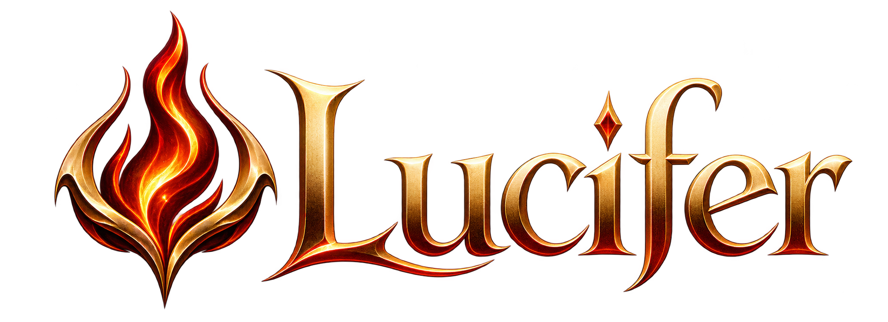

Accessi rapidi
Avvia applicazioni, documenti e servizi web da una griglia personalizzabile e riordinabile.

Un centro di controllo rapido e personale per applicazioni, servizi web e documenti. Monitoraggio delle risorse, catalogo di icone e un'interfaccia costruita in Rust per macOS, Windows e Linux.
Avvia applicazioni, documenti e servizi web da una griglia personalizzabile e riordinabile.
Controlla CPU, RAM, GPU, archiviazione e traffico di rete direttamente dalla schermata principale.
Scegli rapidamente tra centinaia di icone per servizi self-hosted e strumenti professionali.
Un'unica esperienza nativa e coerente su macOS, Windows e distribuzioni Linux.
Versione 1.0b · Download dalle release ufficiali GitHub